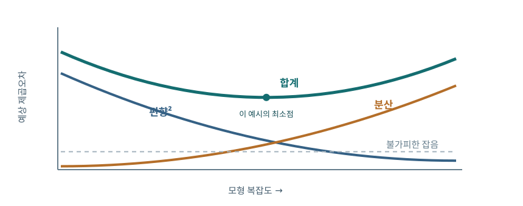

정규화 회귀와 수익률 예측
주식시장의 미래 수익률은 평균은 작고 변동성은 큰 자료에서 추정해야 한다. 표본 안에서 잘 맞는 식은 과거의 우연을 익혔을 수 있다. 이 장에서는 비교 가능한 표본외(out-of-sample, OOS) 채점 규칙을 세우고, 추정오차가 왜 커지는지 유도한 뒤, Ridge regression(능형회귀)·Lasso(라쏘)·cross-validation(교차검증)이 어떤 편향을 의도적으로 도입하는지 단계별로 살핀다.
수익률 예측의 출발점
AI가 금융에서 유용하려면 과거의 가격을 설명하는 것보다 아직 보지 않은 수익률을 예측해야 한다. 시장 전체의 수익률은 종목 간 상대 순위를 맞히는 일과 다르다. 한 해에 모든 주식이 함께 떨어질 수 있어 시장 시계열 예측에는 거시 상태가 중요하다.
이 장의 핵심 질문은 단순하다. 많은 예측변수를 넣어도 과거 평균만 쓰는 사람보다 더 잘 맞힐 수 있는가. 먼저 평가 규칙을 고정해야 답을 비교할 수 있다.
예측의 단위부터 고정하자. 월말 \(t\)에 알려진 정보로 다음 한 달 초과수익률을 예측하는지, 다음 1년 누적수익률을 예측하는지에 따라 변동성과 투자 가능성이 달라진다. 평가 시점보다 늦게 공표된 경제지표를 \(x_t\)에 넣으면 실제로는 만들 수 없는 전략을 검사하게 된다.
시장 전체 수익률과 종목 순위를 함께 맞히는 건가요?
다릅니다. 모든 종목이 10%씩 오르면 시장 방향 예측은 성공할 수 있어도 어느 종목이 더 나을지는 맞힐 정보가 없습니다. 목표를 시장 평균 또는 종목 간 차이로 명시합니다.
앞 장에서 이어지는 문제
금융의 예측 신호는 가격·뉴스·재무비율에 퍼져 있지만 수익률의 대부분은 뜻밖의 충격이다. 관계가 시간에 따라 변하는 비정상성도 있다. 그러므로 복잡한 모형을 쓰기 전에 약한 신호와 짧은 실효 표본이라는 제약을 받아들여야 한다.
진행 경로는 예측 회귀의 실패 → 편향·분산 진단 → 계수 축소와 변수 선택 → 올바른 검증이다. 각 수식은 어떤 오차가 줄고 어떤 오차가 늘어나는지 설명하기 위해 등장한다.
시장 수익률에 예측 가능한 성분이 전혀 없다는 가정도 지나치다. 핵심은 존재하는 성분을 제한된 역사 속에서 충분히 정밀하게 추정할 수 있는가다. 표본 안에서 가장 큰 상관을 고르는 행위 자체가 추정의 일부이므로 그 선택에 사용한 데이터는 독립 채점에 다시 쓰지 않는다.
신호가 약하면 복잡한 모형을 쓰면 해결되나요?
변수 수가 늘면 과거 잡음까지 맞힐 자유도도 늘어납니다. 신호가 약할수록 복잡성 제한과 미래 기간 검증이 더 중요해집니다.
시장 수익률 예측의 오래된 실패
배당수익률이나 금리 스프레드가 높을 때 다음 해의 시장 수익률이 달라질 수 있다는 이론은 그럴듯하다. 문제는 과거 자료에서 찾은 관계가 미래에도 남는가다. 발표 시점까지의 자료를 모두 사용해 회귀한 뒤 같은 기간을 채점하면 미래 정보가 추정에 들어간다.
이후의 사례는 특정 변수가 영원히 무용하다는 선언이 아니다. 예측 능력은 기간과 시장 상태에 따라 달라질 수 있으며, 이를 판정하는 규칙을 사전에 정해야 한다.
예를 들어 배당수익률이 높을 때 평균수익률이 높았다는 결과가 있다면, 그 관계가 경기침체 몇 해에만 생긴 것은 아닌지 확인한다. 회귀선을 그린 뒤 원자료의 시간 순서와 극단 관측치를 표시하면 표본내 적합이 어떤 상태에 의존하는지 드러난다. 표본외 비교는 이 관계의 실제 사용 가능성을 묻는다.
배당수익률이 이론적으로 그럴듯하면 바로 투자해도 되나요?
높은 배당수익률은 높은 요구수익률뿐 아니라 나쁜 성장 전망도 반영할 수 있습니다. 과거 관계가 실제 예측 시점 이후에도 남는지 확인해야 합니다.
평균보다 큰 변동성
주식시장의 연평균 수익률이 양수라도 매년 수익률은 크게 흔들린다. 평균이 10% 안팎이고 표준편차가 20% 안팎이면 한 해 관측치의 신호대잡음비는 대략 0.5에 불과하다. 평균을 정확히 추정하려면 단순히 주가 관측 횟수보다 긴 기간이 필요하다.
더 중요한 것은 예측 대상이다. 올해의 주가지수 수준을 아는 것은 내년의 초과수익률을 아는 것과 다르다. 채점에서는 배당을 포함한 총수익률과 무위험수익률을 뺀 초과수익률의 정의를 일관되게 써야 한다.
독립적인 연간 수익률의 표준편차가 20%라면 100년 평균의 표준오차도 대략 \(20\%/\sqrt{100}=2\%\)포인트다. 평균이 8%인지 10%인지 구별하기에 100년이 생각보다 넉넉하지 않다. 같은 100년을 일별로 쪼개도 장기 평균에 관한 독립 역사가 100배 늘어나는 것은 아니다.
주가를 매일 관찰하면 기대수익률을 정확히 알 수 있나요?
하루 관측이 많아도 같은 100년 역사에서 반복된 독립 경제 국면은 늘지 않습니다. 평균 수익률의 표준오차는 관측 빈도보다 달력 기간에 더 민감합니다.
예측변수 동물원
가장 단순한 예측 회귀는 \(r_{t+1}=a+bx_t+\varepsilon_{t+1}\)이다. \(x_t\)는 시점 \(t\)에 이미 관찰된 배당/주가, 이익/주가, 장단기금리차 등이다. \(b\)는 지표가 한 단위 높아졌을 때 다음 수익률의 조건부 평균이 얼마나 바뀌는지 나타낸다.
변수가 많아질수록 과거에 우연히 잘 맞은 지표를 고르기 쉬워진다. 경제적으로 그럴듯한 이유와 통계적 유의성만으로 끝내지 않고, 선택 과정 전체를 포함해 미래 예측 성능을 봐야 한다.
기울기 \(b\)의 단위는 수익률의 단위 나누기 \(x\)의 단위다. 배당수익률을 0.04로 적는지 4%로 적는지에 따라 수치가 달라진다. 여러 예측변수를 비교할 때는 표준화 계수나 실제로 의미 있는 변화, 예를 들어 배당수익률 1%포인트 상승에 따른 기대수익률 변화를 같이 보고한다.
기울기 2라는 숫자는 큰 효과인가요?
배당수익률을 0.04로 쓰는지 4로 쓰는지에 따라 기울기가 100배 달라집니다. 변수 1%포인트 변화가 예상수익률을 얼마나 바꾸는지 단위를 맞춰 읽어야 합니다.
높은 배당수익률의 두 해석
매년 배당이 \(g\)로 성장하고 요구수익률이 \(r>g\)로 일정하다면, 고든 성장모형에서 \(P_t=D_{t+1}/(r-g)\)이다. 양변을 정리하면 \(D_{t+1}/P_t=r-g\)다. 배당 대비 가격이 낮을 때 높은 미래 수익률 \(r\) 때문일 수도 있고 낮은 배당성장률 \(g\) 때문일 수도 있다.
따라서 배당수익률의 계수에 인과적 이름을 곧장 붙일 수 없다. 경기침체기에 위험 보상이 올라 가격이 떨어졌다면 이후 수익률이 높아질 수 있다. 기업의 배당 성장 자체가 나빠졌다면 같은 높은 배당수익률이 좋은 투자 신호가 아닐 수도 있다.
고든 모형에서 \(D_{t+1}/P_t=r-g\)이므로 관찰된 높은 비율을 \(r\)의 상승만으로 해석할 수 없다. 분기 실적 악화로 \(g\)가 하락해도 같은 현상이 나타난다. 미래 배당 성장과 이후 실현 수익률을 각각 예측해 보면 두 설명을 부분적으로 구분할 수 있지만, 성장률 자체의 측정오차도 고려해야 한다.
배당수익률 상승은 왜 두 방향으로 해석되나요?
가격이 낮아진 원인이 투자자의 요구수익률 상승일 수도 있고 미래 배당 성장 둔화일 수도 있습니다. 동일한 현재 비율만으로 두 원인을 구별할 수 없습니다.
자료를 잘게 나누어도 평균은 정밀해지지 않는다
전체 기간을 \(T\)년, 관측 간격을 \(h\)년이라고 하자. 독립 로그수익률 \(X_k\)가 평균 \(\mu h\), 분산 \(\sigma^2h\)를 가지면 \(n=T/h\)개를 합한 연율 평균 추정치는 \(\hat\mu=\sum_k X_k/T\)다. 독립성 때문에 분산은 다음과 같이 계산된다.
\(h\)가 지워진다. 하루 자료가 한 달 자료보다 행 수는 많아도, 동일한 역사 기간에서 평균수익률의 핵심 정보량은 크게 늘지 않는다. 실제 수익률에 자기상관이 있으면 식을 수정해야 하지만 “많은 행 = 많은 독립 정보”가 아니라는 직관은 유지된다.
분산 계산은 합의 독립성을 사용한다. 실제 금융자료에서 월별 수익률이 자기상관을 가진다면 \(\operatorname{Var}(\sum X_k)\)에는 각 쌍의 공분산이 더해진다. 고빈도 자료는 거래 미시구조를 보여 주지만, 기대수익률의 장기 변화를 알아내는 데 필요한 달력 기간을 대체하지는 못한다.
한 해 수익을 252일로 쪼개면 표본이 252배가 되나요?
행 수는 늘지만 각 일별 평균의 신호는 작아집니다. 독립 증가량 가정 아래 연율 평균 추정의 분산에서 관측 간격이 소거됩니다.
단순수익률, 로그수익률, 연속복리
단순수익률은 \(R=(P_1-P_0)/P_0\)이고 로그수익률은 \(r=\ln(P_1/P_0)=\ln(1+R)\)이다. \(R\)이 작을 때 테일러 전개 \(\ln(1+R)=R-R^2/2+\cdots\)로 둘이 가까워진다. 여러 기간의 가격비는 곱이므로 로그를 취하면 수익률은 합이 된다.
연 \(r\)을 \(m\)번 복리로 적용한 \((1+r/m)^m\)은 \(m\to\infty\)에서 \(e^r\)로 간다. 로그수익률의 합산성과 짧은 구간 분산의 비례관계는 독립 또는 적절한 약한 의존 조건을 구분해 사용해야 한다.
주가가 100에서 110으로 오르고 다시 100으로 내려오면 단순수익률은 \(10\%\)와 약 \(-9.09\%\)다. 둘을 더하면 약 \(0.91\%\)이지만 로그수익률은 \(\ln(1.1)+\ln(100/110)=0\)으로 정확히 합산된다. 다만 투자자의 원화 손익을 계산할 때는 단순수익률의 곱셈식이 직접적이다.
+10% 뒤 -10%면 원금으로 돌아오나요?
100원은 110원이 된 뒤 10% 하락하면 99원입니다. 원금 복귀에는 110원에서 약 9.09% 하락이 필요하며 로그수익률은 이 곱셈을 덧셈으로 바꿉니다.
일별 자료의 다른 역할
일별 자료는 연평균 기대수익률 추정에 마법처럼 많은 정보를 더하지 않는다. 오히려 호가 스프레드, 비동시 거래, 가격 정체 때문에 가짜 자기상관이 생길 수 있다. 매수호가와 매도호가 사이의 거래가격 이동만으로 하루 수익률이 오르내릴 수 있다.
반면 변동성은 하루 단위 관측에서 더 잘 추정할 수 있다. 주가가 하루에 얼마나 흔들리는지는 위험관리와 포지션 크기 결정에 중요하다. 따라서 평균을 예측하는 문제와 분산을 추정하는 문제에 같은 자료 주기를 기계적으로 적용하지 않는다.
평균과 분산의 정보량 차이를 보자. 변동성이 시간에 따라 지속된다면 최근 일별 수익률 제곱은 내일의 위험을 추정하는 데 도움이 될 수 있다. 그러나 내년 평균수익률의 작은 차이는 일별 잡음에 묻힌다. 고빈도 변동성 추정의 성공을 고빈도 방향 예측의 성공으로 혼동하지 않는다.
일별 자료는 쓸모가 없나요?
기대수익률 평균에는 제한적이어도 최근 변동성, 거래량, 호가 스프레드의 추정에는 중요합니다. 예측하려는 대상이 평균인지 위험인지 먼저 정합니다.
표본 안의 유의성
예측 회귀에서 \(t\)값이 크거나 장기 \(R^2\)가 높다는 결과는 먼저 표본 내 사실이다. 변수를 고른 기간과 계수를 추정한 기간이 같으면 선택 편향이 발생한다. 장기 수익률은 겹치는 기간이 많아 표준오차 계산도 까다롭다.
정말 알고 싶은 것은 과거 어느 시점으로 돌아가 당시 이용 가능했던 자료만으로 만든 예측이 이후 결과를 맞혔는가다. 이 질문은 금융상품의 실제 사용 가능성과도 일치한다.
같은 자료에서 후보 변수를 100개 시험해 가장 높은 \(t\)값 하나를 보고하면 그 값의 통상적인 유의수준은 적용되지 않는다. 장기 수익률을 겹치게 만들면 예컨대 12개월 수익률 두 개가 11개월을 공유해 오차도 강하게 상관된다. 표준오차와 변수 선택을 모두 감안한 뒤에야 신뢰도를 말할 수 있다.
표본내 t값이 크면 왜 의심해야 하나요?
후보 100개 중 가장 큰 t값을 골랐다면 그 숫자는 사전 지정된 가설 한 개의 검정과 다릅니다. 변수 선택 과정과 겹치는 장기 수익률의 표준오차를 함께 고려해야 합니다.
표본내와 표본외를 구분하기
표본내 적합은 전체 기간으로 \(a,b\)를 추정한 후 같은 자료에서 잔차를 계산한다. 표본외 검증은 각 시점 \(t\)에 \(t\)까지의 자료만으로 \(\hat a_t,\hat b_t\)를 추정해 \(\hat r_{t+1}=\hat a_t+\hat b_tx_t\)를 만든다. 이후 \(r_{t+1}\)이 실현되면 오차를 기록한다.
이 과정을 앞으로 이동하며 반복하는 것이 재귀적 예측이다. 데이터 수정본이 나중에 공개되었다면 과거의 정보 집합에 넣으면 안 된다. 금융에서는 이 작은 시점 오류가 약한 진짜 신호보다 클 수 있다.
재귀 예측에서는 첫 훈련 구간을 정하고, 그다음 한 시점의 예측을 저장한 뒤 실제값이 나올 때까지 수정하지 않는다. 이후 데이터를 한 달 추가해 다시 적합한다. 마지막에 모은 예측값들은 각기 다른 계수로 만들었지만 모두 당시 정보만 사용했다는 공통점을 갖는다.
표본외 예측은 계수를 한 번만 추정하나요?
재귀 평가에서는 각 월말까지의 자료로 계수를 다시 추정하고 다음 달 예측을 저장합니다. 미래 실현치를 본 뒤 과거 예측을 고치지 않아야 합니다.
과거 평균과 표본외 결정계수
벤치마크는 예측변수 없이 시점 \(t\)까지의 평균 \(\bar r_t\)를 다음 수익률 예측으로 쓰는 것이다. 모형과 벤치마크의 제곱오차 합을 비교한다.
분자가 더 작아야 양수다. 표본내 OLS의 절편 포함 \(R^2\)는 0 이상이지만 표본외 값은 음수가 될 수 있다. 누적 제곱오차 차이 \(\sum_{s\le t}(e^2_{\rm bench,s}-e^2_{\rm model,s})\)를 그리면 성과가 어느 기간에 생겼는지도 보인다.
예를 들어 벤치마크 제곱오차 합이 100이고 모형이 98이면 \(R^2_{\rm OOS}=1-98/100=0.02\)다. 모형이 105라면 \(-0.05\)다. 표본내 OLS는 같은 자료의 절편만 있는 모형보다 잔차 제곱합이 클 수 없지만, 미래에는 그 보장이 없어 음수가 자연스럽게 가능하다.
표본외 R²가 음수면 계산 오류인가요?
아닙니다. 기준선 제곱오차가 100인데 모형이 105면 값은 -5%입니다. 과거에 적합한 모형이 미래의 과거 평균보다 나쁜 것은 충분히 가능합니다.
웰치와 고열의 판정
배당수익률 등 많은 시장 예측변수는 과거 표본 안에서 설명력을 보였지만, 시점마다 다시 추정하는 표본외 평가에서는 과거 평균에 뒤졌다. 한 번의 위기 기간에 기울기가 크게 맞아 전체 통계량을 끌어올렸을 가능성도 살펴야 한다.
이 결과는 초과수익 예측을 포기하라는 뜻보다 비교 기준을 낮추지 말라는 교훈이다. Welch·Goyal의 누적 오차 그림에서는 선이 내려갈 때 제안 모형이 기준선보다 더 큰 오차를 낸다.
원 논문의 결과를 평가할 때 변수의 경제적 논리와 채점의 결과를 분리하자. 배당수익률이 할인율과 관련된다는 말이 참이어도 그 변수 하나로 다음 해 수익률을 안정적으로 맞히기는 어려울 수 있다. 실패는 곧 '가격이 무작위'라는 증명보다 추정오차와 관계 변화가 큰 환경이라는 증거다.
과거 평균을 이기지 못하면 시장에 예측 가능성이 전혀 없나요?
그렇지 않습니다. 예측 가능한 성분이 작고 계수 추정이 불안정하면 진짜 관계가 있어도 해당 변수·표본으로는 활용하지 못할 수 있습니다.
간단한 경제 제약은 도움이 될까
배당수익률이 높으면 미래 수익률이 높아야 한다는 이론적 부호를 강제하거나, 예상 초과수익률이 음수일 때 0으로 절단하면 과도한 추정값을 줄일 수 있다. 이는 모형에 사전 믿음을 넣는 정규화의 한 형태다.
월별 \(R^2_{\rm OOS}\)가 작아도 평균·분산 투자자는 포트폴리오 비중을 개선할 수 있다. 다만 기대효용 증가는 위험회피계수, 매매비용, 차입 제약에 민감하다. Campbell·Thompson의 주장은 통계 점수와 경제적 가치를 구분해 읽어야 한다.
예상 초과수익률을 0으로 절단하면 음의 전망이 모두 사라져 제곱오차가 줄 수도 있지만 진짜 음의 기대수익 상태에서는 편향이 생긴다. 투자 비중은 단순한 평균·분산 문제에서 대략 예상 초과수익률을 위험회피계수와 분산의 곱으로 나눈 값에 비례한다. 작은 예측 변화도 비중 제약과 비용에 따라 가치가 달라진다.
예상 초과수익을 0 아래로 못 내려가게 하면 왜 도움이 되나요?
극단적인 음의 추정값이 잡음일 때 절단이 오차를 줄일 수 있습니다. 실제로 음의 기대수익률이 있는 시기에는 반대로 편향을 만듭니다.
시간이 지난 뒤의 재검증
첫 논쟁 이후 발표된 새 변수도 발표 당시의 자료에는 잘 맞을 수 있다. 독립된 후속 기간과 공통한 기준으로 다시 평가하면 결과가 약해지기도 한다. 이는 예측 관계가 소멸했을 수도 있고, 처음부터 선택 편향이 있었을 수도 있음을 뜻한다.
두 설명을 가르려면 원 논문의 표본 종료일, 논문 발표일, 이후 기간을 따로 본다. 발표 전에 이미 감소했다면 데이터 채굴이나 불안정성의 비중이 클 수 있다. 발표 후 추가 감소에는 투자자의 반응도 기여할 수 있다.
표본을 원래 연구의 종료 전·발표 전·발표 후로 나누면 해석이 분명해진다. 발표 전 새 기간에서 이미 성과가 사라졌다면 시장이 논문을 읽어서 없앤 것은 아니다. 반대로 발표 후에만 크게 줄었다면 학습한 투자자의 거래가 후보 설명이다. 어느 경우든 단일 원인으로 확정하려면 더 많은 증거가 필요하다.
발표 뒤 성과가 사라졌다면 투자자가 배운 결과인가요?
발표 전에 새 자료에서 이미 약해졌다면 발표를 원인으로 볼 수 없습니다. 원 연구의 표본 종료일과 논문 공개일을 나누어 비교해야 합니다.
유의성·안정성·실용성의 깔때기
변수가 표본내 유의성을 유지하는지, 같은 부호로 표본외 예측을 하는지, 거래비용 뒤에도 투자 의사결정을 개선하는지는 서로 다른 관문이다. 앞 관문을 통과해도 뒤 관문을 자동으로 통과하지 않는다.
새 논문의 수를 세어 “성공률”이라고 부를 때는 각 연구가 사용한 시작일, 예측 기간, 재추정 방식이 같은지 확인해야 한다. 공정한 비교는 변수 자체뿐 아니라 검증 절차를 맞춘다.
검증 깔때기에서 각 단계는 다른 손실함수를 쓴다. 통계 검정은 계수 0 여부, 표본외 제곱오차는 수치 예측, 경제적 평가는 투자자의 효용이나 순수익을 본다. 예측값이 종목 순위를 바꾸지 않으면 제곱오차의 작은 개선이 거래 성과를 바꾸지 않을 수도 있다.
유의성, 예측력, 수익성을 한 점수로 합쳐도 되나요?
세 단계는 질문이 다릅니다. 계수가 0이 아닌지, 다음 달 수익률을 맞히는지, 매매비용 뒤 효용을 높이는지는 각각 별도 표로 봐야 합니다.
누적 오차 차이 그래프 읽기
그래프의 세로축이 누적 \(\mathrm{SSE}_{\rm bench}-\mathrm{SSE}_{\rm model}\)이면 상승은 예측변수의 승리, 하락은 과거 평균의 승리다. 선이 특정 위기 이후 꺾이는 경우에는 기울기 자체가 달라졌는지, 큰 한두 관측치가 오차를 지배했는지 확인한다.
표본내 선과 표본외 선이 벌어지면 과거를 맞힌 계수가 미래에는 통하지 않았다는 뜻이다. 그래프의 0선뿐 아니라 기울기의 안정성과 표본 종료일 표시를 함께 보아야 한다.
누적 곡선의 한 시점 증가분은 \(e^2_{\rm bench,t}-e^2_{\rm model,t}\)이다. 예를 들어 기준선 오차가 3이고 모형 오차가 1이면 해당 시점에서 곡선은 \(9-1=8\)만큼 오른다. 큰 위기 관측치 하나가 긴 기간의 완만한 하락을 뒤집을 수 있으므로, 전체 결과와 극단 시점을 뺀 결과를 함께 읽는다.
누적오차 그림이 갑자기 급등하면 계속 좋은 모형인가요?
한 위기 달의 큰 제곱오차 차이가 급등을 만들 수 있습니다. 그 달을 뺀 기울기와 이후 기간의 안정성을 함께 확인해야 합니다.
첫 단계의 결론
예측변수가 많아도 과거 평균보다 좋다는 주장은 어렵게 입증해야 한다. 기준선은 쉽게 이길 수 있는 허수아비가 아니라 실제로 이용 가능하고 추정오차가 작은 대안이어야 한다. 정확도가 조금 높아도 구현 비용과 위험을 함께 본다.
이제 실패의 원인을 모형의 ‘지능 부족’이 아니라 약한 신호와 큰 추정오차에서 찾는다. 그 원인이 맞다면 복잡성을 제어하는 방법이 다음 처방이 된다.
정규화로 넘어가는 논리는 실패 원인의 진단이다. 자료에 신호가 없으면 어떤 벌점도 지속적 예측력을 만들 수 없다. 그러나 신호는 작지만 자유로운 계수의 분산이 더 크다면 계수를 0 쪽으로 조금 당기는 편이 새 자료에서 나을 수 있다. 다음 슬라이드들의 수식은 바로 이 조건을 정량화한다.
정규화는 없는 신호를 만들어 주나요?
아닙니다. 신호가 있지만 자유로운 계수의 잡음이 그것을 덮을 때 분산을 낮춰 드러나게 할 수 있습니다. 참 신호가 0이면 미래 성과도 지속되지 않습니다.
왜 실패하는가
진짜 조건부 기대수익률이 존재해도 매번 실현 수익률에는 큰 예측 불가능한 충격이 들어온다. 잡음이 클 때 회귀계수는 작은 표본의 우연에 따라 크게 달라진다. 변수 수가 늘면 그 우연을 설명할 자유도가 늘어난다.
핵심은 참모형의 존재와 참모형을 추정할 수 있는가가 별개라는 점이다. 금융시장의 역사 하나로 수백 변수를 추정한다면 이론적으로 유효한 관계도 실제 예측에서 실패할 수 있다.
회귀계수의 추정오차는 예측에 쓰인 \(x_t\)와 곱해져 미래 예측오차가 된다. 따라서 계수가 불안정할수록 포트폴리오 비중도 흔들리고 매매회전율이 커진다. 표본내 적합이 뛰어난데 자주 거래하고 성과가 나쁘다면 모형이 가격의 잡음을 추적하고 있을 가능성을 살펴야 한다.
계수의 불안정성이 투자에 왜 문제인가요?
예상수익률이 조금만 바뀌어도 매수 비중이 크게 요동치면 잦은 주문과 거래비용이 생깁니다. 예측오차와 함께 포지션 변화도 기록해야 합니다.
작은 참 신호의 규모
\(y=f(x)+\varepsilon\)이고 신호와 잡음이 독립이라면 참 예측 가능 비율은 \(R^2_{\rm true}=\operatorname{Var}(f(x))/[\operatorname{Var}(f(x))+\operatorname{Var}(\varepsilon)]\)이다. 조건부 평균의 표준편차가 잡음의 1/10이면 \(R^2=0.01/1.01\approx0.99\%\)다.
따라서 작은 표본외 결정계수는 무조건 무의미하지 않다. 반대로 수익률을 거의 완벽히 맞히는 표본내 모형은 강한 의심을 받아야 한다. 이미 알려진 미래 정보나 거래 불가능한 가격이 입력에 섞였을 수 있다.
식에서 신호의 분산을 \(0.01\), 잡음의 분산을 \(1\)로 놓으면 전체 분산은 \(1.01\)이고 참 예측 가능 비율은 약 1%다. 완벽한 참 함수를 알고도 제곱오차의 약 99%가 남는다. 실제 모형은 그 함수를 추정해야 하므로 관측 가능한 표본외 \(R^2\)는 더 작을 수 있다.
참 R²가 1%면 모형이 나쁜 건가요?
수익률 잡음이 신호의 100배 가까우면 참 조건부 평균을 알아도 대부분의 변동은 남습니다. 현실적인 표본외 성과의 상한을 이해하는 데 필요한 숫자입니다.
과적합 모의실험을 직접 구성하기
관측치 120개에서 후보 변수 110개를 만들되 실제 영향이 있는 것은 첫 10개라고 하자. 독립 표준정규 변수와 잡음의 분산을 1로 두고 참계수를 모두 \(c\)로 정하면 신호분산은 \(10c^2\)다. 참 \(R^2=5\%\)가 되게 하려면 \(10c^2/(10c^2+1)=0.05\)를 풀어 \(c^2=1/190\)을 얻는다.
이후 회귀에 넣는 변수 수를 늘리고 훈련자료와 새 자료의 \(R^2\)를 따로 기록한다. 중요한 점은 11번째 이후 변수가 진짜로 효과 0이라는 정답을 우리가 안다는 것이다. 따라서 성능 하락이 추정오차에서 왔는지 직접 확인할 수 있다.
\(c^2=1/190\)이면 각 진짜 계수의 절댓값은 약 \(0.073\)이다. 잡음 표준편차가 1인 자료에서 이 신호를 120개 관측으로 분리하기 쉽지 않다. 시뮬레이션을 여러 번 반복해 평균 훈련·시험 곡선을 그리면 단일 난수 추첨의 운과 변수 수가 만드는 체계적 변화를 구별할 수 있다.
참변수 10개를 알고 있는데 왜 110개를 시험하나요?
모의실험에서는 정답을 알고 있으므로 100개 잡음변수를 추가할수록 OLS의 미래 성능이 어떻게 악화되는지 원인을 분명히 볼 수 있습니다.
변수 증가와 벌점의 효과
OLS는 변수를 추가할 때 표본내 제곱오차가 증가할 수 없다. 추가 변수를 쓰지 않도록 계수를 0으로 놓는 선택이 항상 가능하기 때문이다. 그러나 미래 자료에서는 잡음에 맞춘 계수가 오차를 키울 수 있다.
같은 변수 수를 유지하고 능형회귀의 벌점을 키우면 표본내 적합은 다소 낮아지지만 표본외 오차가 줄어드는 구간이 생긴다. 벌점이 너무 크면 유용한 신호까지 지워 다시 나빠진다. 그래프의 최저점은 사전 고정값이 아니라 독립 자료로 선택해야 한다.
OLS의 훈련오차가 늘 수 없다는 사실은 최적화의 구조에서 나온다. 변수 하나를 추가한 뒤 새 계수를 0으로 두면 예전 해를 그대로 재현할 수 있기 때문이다. 하지만 미래 오차에는 이런 포함 관계가 없다. 벌점을 고르는 검증자료까지 여러 번 들여다보면 그 자료에도 과적합하므로 마지막 시험 구간을 남긴다.
OLS에 변수를 더하면 훈련 R²는 왜 떨어지지 않나요?
새 변수의 계수를 0으로 두면 이전 해를 그대로 얻을 수 있기 때문입니다. 최적화가 선택할 수 있는 집합이 넓어지지만 미래 오차는 커질 수 있습니다.
차원이 커질 때 추정오차의 유도
실제 평균벡터를 \(\mu=Xg\)라 하고 \(\tau\)기간 평균수익률을 \(\bar r=\mu+\bar\varepsilon\)라 하자. \(X\)의 열공간에 대한 투영행렬 \(P=X(X^\top X)^{-1}X^\top\)로 OLS 예측을 만들면 \(\hat\mu=P\bar r=\mu+P\bar\varepsilon\)이다. \(P\mu=\mu\)이고 잡음 공분산이 \(\sigma^2I/\tau\)라는 가정 아래 추정오차 제곱의 기대값은 다음과 같다.
\(P\)가 대칭이고 \(P^2=P\), \(\operatorname{tr}P=K\)인 성질을 사용했다. 변수 \(K\)가 늘수록 오차가 선형으로 커지고 기간 \(\tau\)가 늘수록 줄어든다. 새 자료의 잡음은 이 추정오차와 독립이므로 참 신호의 크기 \(\|\mu\|^2\)보다 추정오차가 크면 0 예측보다 표본외 성능이 낮아질 수 있다.
첫 등호는 \(\hat\mu-\mu=P\bar\varepsilon\)에서 나오고, 두 번째는 \(P^\top P=P\)인 투영행렬 성질을 쓴다. \(E[z^\top Az]=\operatorname{tr}(A\operatorname{Var}z)\)는 평균 0인 벡터의 이차형식 항등식이다. 각 독립 방향마다 잡음분산 \(\sigma^2/\tau\)가 하나씩 추가되어 총 \(K\sigma^2/\tau\)가 된다.
추정오차가 변수 수 K에 비례하는 이유는 무엇인가요?
서로 직교한 K개 방향마다 표본평균 잡음의 분산이 하나씩 들어옵니다. 각 방향의 기여가 잡음분산 나누기 기간이면 총합이 K배가 됩니다.
편향과 분산을 식으로 분해하기
새 관측치가 \(y_0=f(x_0)+\varepsilon_0\)이고 학습자료에서 나온 예측 \(\hat f(x_0)\)와 새 잡음이 독립이라고 하자. \(\bar f=E[\hat f(x_0)]\)를 더하고 빼면 \(y_0-\hat f=\varepsilon_0+(f-\bar f)+(\bar f-\hat f)\)다. 제곱하여 기댓값을 취할 때 새 잡음의 평균이 0이고 \(E(\bar f-\hat f)=0\)이므로 교차항이 사라진다.
첫 항은 참 함수를 알아도 남는 잡음, 둘째는 평균 예측의 체계적 오류, 셋째는 학습표본에 따른 불안정성이다. 정규화는 둘째를 조금 늘리는 대가로 셋째를 크게 줄이려는 선택이다.
편향항은 여러 훈련표본에서 평균 예측이 참값에서 얼마나 벗어나는지, 분산항은 훈련표본이 바뀔 때 예측이 얼마나 움직이는지다. 한 번의 관측자료에서는 둘을 직접 볼 수 없으므로 재표본·검증으로 근사한다. 금융에서는 시장 상태가 바뀌면 '같은 참 함수'라는 가정도 깨질 수 있어 이 분해를 진단 도구로 사용한다.
편향을 줄이면 언제나 총오차가 줄어드나요?
아닙니다. 예측이 평균적으로 참값에 더 가까워져도 표본마다 심하게 요동치면 분산항이 커집니다. 세 항의 합을 미래 자료에서 비교해야 합니다.

세 오차의 경제적 의미
수익률의 예측 불가능한 충격은 모형을 아무리 정교하게 해도 없앨 수 없다. 편향은 모형이 지나치게 단순해 실제 위험 보상을 놓칠 때 생긴다. 분산은 작은 표본마다 계수가 요동쳐 투자 비중이 불안정해지는 문제다.
분산이 큰 모형은 계산상 평균 점수가 나쁠 뿐 아니라 잦은 매매와 극단적 레버리지를 유발할 수 있다. 벌점은 통계적 분산과 경제적 거래비용을 동시에 낮추는 방향으로 작동할 수 있지만, 실제 효과는 검증해야 한다.
두 모형이 같은 평균 예측오차를 갖더라도 하나의 예상수익률이 매달 \(-20\%\)와 \(+20\%\)를 오가면 투자 비중은 크게 변한다. 다른 모형이 완만한 전망을 내면 거래비용 뒤에는 더 나을 수 있다. 예측오차뿐 아니라 예측값의 변동과 매매회전율을 함께 기록하는 이유다.
통계적 분산과 가격 변동성은 같은 건가요?
여기의 분산은 훈련표본을 바꿨을 때 예측값이 얼마나 달라지는지를 말합니다. 한 종목의 실제 수익률 변동성과는 다른 대상입니다.
U자형 상충관계
아주 단순한 과거 평균 모형은 변수에 따른 변화를 못 잡아 편향이 크지만 추정이 안정적이다. 모든 변수를 자유롭게 넣는 OLS는 편향이 낮을 수 있으나 잡음에 민감하다. 중간 복잡도에서 합계 오차가 낮아지는 U자형 그림은 이 관계를 요약한다.
그러나 U자의 위치는 자료의 신호대잡음비와 변수 상관에 따라 달라진다. 금융처럼 신호가 약하고 데이터가 짧을수록 왼쪽, 즉 강한 축소 쪽이 유리할 가능성이 크다. 그림은 사전 믿음이며 실제 최저점은 검증에서 찾는다.
U자 그림의 왼쪽 끝에서는 중요한 신호를 모두 0으로 보는 편향이 남고, 오른쪽 끝에서는 우연한 움직임까지 계수로 흡수한다. 어느 쪽이 최적인지는 미리 정한 그림이 아니라 새 기간의 오차가 답한다. 한 번 고른 최저점을 반복해서 시험자료에 맞추면 U자에서 가장 운 좋은 지점을 고르는 과적합이 생긴다.
U자형 그림의 최저점을 눈으로 골라도 되나요?
곡선이 훈련자료에서 나온 것이라면 그 최저점은 과거에 최적인 지점입니다. 미래 기간이나 독립 검증에서 벌점의 성능을 비교해야 합니다.
공짜 점심이 없는 이유
모든 가능한 자료생성과정에 대해 언제나 이기는 추정기는 없다. 능형회귀는 많은 작은 계수가 있다는 믿음, 라쏘는 소수 변수만 중요하다는 믿음을 반영한다. 진실이 다르면 두 방법의 순위도 바뀐다.
따라서 알고리즘 이름보다 가정이 중요하다. 예측변수의 정의, 측정오차, 기간 변화, 거래 가능성에 대한 경제적 지식이 모형을 고르는 데 사용된다. 어떤 방법의 최고 성적만 가져와 보편적으로 좋다고 말하면 선택 편향이 생긴다.
능형회귀의 '많은 작은 효과' 가정과 라쏘의 '소수의 큰 효과' 가정은 모두 검증 가능한 가설이다. 비슷한 가치 지표가 다수 있다면 하나만 남기는 라쏘의 선택은 불안정할 수 있고, 정말 몇 변수만 유효하다면 능형회귀가 잡음 변수도 남길 수 있다. 성능과 변수 선택의 안정성을 같이 비교해야 한다.
라쏘가 능형회귀보다 늘 간단하고 좋은가요?
진짜 효과가 여러 상관된 변수에 퍼져 있다면 라쏘가 한 변수를 임의로 남기기 쉽습니다. 능형회귀의 부드러운 분산 축소가 더 나을 수 있습니다.
금융 자료에 맞는 검증
낮은 신호대잡음비는 작은 \(R^2\)를 예상하게 하고, 짧은 실효 표본은 계수의 불확실성을 키운다. 시간에 따라 관계가 변하면 임의 분할보다 미래 방향의 검증이 필요하다. 수익률의 공통 충격은 종목 수가 많아도 독립 표본 수가 그만큼 늘지 않음을 뜻한다.
이 구조에서 모형의 자유도를 제한하고, 자료의 시점을 엄격히 지키고, 단순한 기준선과 비교하는 것이 과학적 기본값이다. 성과가 실패하면 원인과 예외 기간을 기록해야 한다.
금융 검증에서는 같은 달의 여러 종목을 서로 독립된 훈련·검증 묶음으로 나누면 공통 충격이 양쪽에 들어간다. 다음 달 수익률을 예측하려는 목적이라면 검증은 미래 달에 두는 편이 직접적이다. 산업·회사·기간 중 무엇을 독립적으로 일반화하려는지에 따라 분할 단위가 달라진다.
종목을 무작위로 훈련·검증에 나누면 왜 위험한가요?
같은 달 두 집합은 같은 금리와 시장 충격을 공유합니다. 미래 달에 일반화할지 보려면 달력 시간을 기준으로 뒤의 기간을 검증해야 합니다.
편향을 의도적으로 쓰는 처방
비편향 추정은 참계수를 평균적으로 맞힌다는 장점이 있지만 미래 예측오차를 최소화한다는 보장은 없다. 계수를 0에 가깝게 끌어당기면 약한 신호에서 계수의 요동을 줄일 수 있다. 이 의도적 편향이 축소추정이다.
두 처방은 모두 적합과 단순성을 맞바꾼다. 능형회귀는 모든 계수를 연속적으로 줄이고, 라쏘는 일부를 0으로 만든다. 어느 쪽이 맞는지는 실제 변수 효과가 넓게 퍼져 있는지 드문지에 달려 있다.
비편향성은 동일한 환경의 표본을 무한히 반복했을 때 추정량 평균이 참값과 같다는 속성이다. 실제 투자자는 하나의 짧은 역사로 한 번 예측한다. 약한 신호에서 큰 계수 오차가 더 큰 비용을 낳는다면 작은 편향을 받아들이는 선택이 합리적이다. 다음의 능형·라쏘는 편향을 명시적 벌점으로 조절한다.
비편향 추정기를 포기하면 잘못된 통계 아닌가요?
비편향성은 반복표본 평균의 성질입니다. 한 번의 짧은 역사에서 작은 편향을 허용해 예측의 분산을 크게 줄이면 미래 제곱오차는 오히려 낮아질 수 있습니다.
첫 번째 처방으로 가기
능형회귀는 OLS의 제곱오차에 계수 크기에 대한 벌점을 더한다. 큰 계수가 꼭 나쁘다는 뜻이 아니라, 약한 자료에서 큰 계수를 확신하려면 그만큼 강한 증거가 필요하다는 뜻이다.
다음 슬라이드부터 벌점이 왜 불안정한 역행렬을 안정화하는지 유도한다. 절편은 보통 벌점을 주지 않고, 변수는 단위를 맞춰 표준화한다는 실무 조건을 먼저 기억해 두자.
벌점이 계수의 제곱합을 비용으로 보는 이유는 큰 절댓값의 계수에 더 빠르게 증가하는 비용을 붙이기 위해서다. 같은 예측오차를 만드는 두 해가 있다면 계수 크기가 작은 쪽을 선호한다. 절편까지 벌점을 주면 자료의 전체 평균도 0으로 부당하게 당기므로 보통 기울기만 축소한다.
큰 계수는 항상 과적합의 증거인가요?
강한 경제적 효과가 있으면 큰 계수가 맞을 수 있습니다. 벌점은 큰 계수를 금지하는 규칙이 아니라 약한 자료에서 큰 계수를 주장할 때 추가 증거를 요구하는 방식입니다.
OLS의 역행렬이 불안정해지는 이유
\(y=Xg+\varepsilon\)에서 제곱오차 \((y-Xg)^\top(y-Xg)\)를 \(g\)에 대해 미분하면 \(-2X^\top y+2X^\top Xg=0\)이다. \(X^\top X\)가 가역이면 \(\hat g=(X^\top X)^{-1}X^\top y\)다. 변수들이 서로 비슷하면 \(X^\top X\)의 어떤 방향의 고유값이 아주 작아진다.
추정량의 분산 \(\operatorname{Var}(\hat g)=\sigma^2(X^\top X)^{-1}\)에서 그 방향의 분산은 \(\sigma^2/\lambda_{\min}\)이다. 작은 고유값으로 나누니 계수가 폭발한다. \(K>N\)이면 열들이 독립일 수 없어 해가 유일하지 않으며, 훈련자료를 완벽히 맞히는 여러 해 가운데 미래에 잘 맞는 해를 OLS만으로 고를 수 없다.
고유값이 작은 방향은 서로 닮은 변수의 '차이'처럼 자료가 거의 변하지 않는 조합이다. 이 방향에서 수익률의 작은 잡음만 있어도 역행렬은 이를 크게 확대한다. 능형회귀는 고유값에 양의 수를 더해 이런 증폭을 제한한다. 변수마다 별도 계수를 정확히 알아야 하는 설명 목적과 안정적인 예측 목적을 구분해야 한다.
역행렬의 작은 고유값이 무슨 뜻인가요?
거의 같은 두 변수를 각각 따로 움직이는 자료가 적다는 뜻입니다. 둘의 작은 차이에 포함된 잡음을 역행렬이 크게 확대해 계수가 흔들립니다.
능형회귀의 해를 직접 유도하기
능형회귀는 \(L(g)=(y-Xg)^\top(y-Xg)+\gamma g^\top g\)를 최소화한다. 미분하여 0으로 놓으면 \(-2X^\top(y-Xg)+2\gamma g=0\)이고, 항을 옮기면 \((X^\top X+\gamma I)g=X^\top y\)다. 따라서 다음의 유일한 해를 얻는다.
\(X^\top X\)의 고유값 \(\lambda_j\)에 \(\gamma\)가 더해지므로 작은 고유값으로 나누는 불안정성이 줄어든다. \(\gamma\to0\)이면 가역일 때 OLS로, \(\gamma\to\infty\)이면 표준화된 설명변수의 계수가 0으로 간다. 절편은 별도로 유지되어 과거 평균 예측이 된다.
목적함수의 \(\gamma g^\top g\)를 미분하면 \(2\gamma g\)가 된다. 따라서 정상조건은 OLS의 \(X^\top Xg=X^\top y\)에 \(\gamma Ig\)를 추가한 형태다. \(\gamma>0\)이면 모든 고유값이 양수가 되어 역행렬이 존재한다. 이는 계산의 안정성을 높이지만, 안정된 수치해가 곧 경제적으로 올바른 예측이라는 뜻은 아니다.
능형회귀는 X'X를 왜 안정화하나요?
양의 벌점을 더하면 원래 고유값마다 양수가 더해집니다. 0에 가까운 방향으로 나누는 불안정성이 줄지만, 벌점이 너무 크면 참 신호도 함께 축소됩니다.
두 변수로 보는 작은 분모
표준화한 두 변수의 표본 상관이 \(\rho\)이고 \(c_j=X_j^\top y/N\)라 하자. 목적함수에 \(1/N\)을 붙여 미분하면 \((1+\gamma)g_1+\rho g_2=c_1\), \(\rho g_1+(1+\gamma)g_2=c_2\)다. 두 식을 더하고 빼면 다음이 나온다.
\(\rho=0.99\)이고 벌점이 없으면 두 계수의 차이를 \(0.01\)로 나눈다. 아주 작은 표본 차이가 거대한 상반 계수로 변한다. \(\gamma=0.1\)이면 분모가 \(0.11\)이 되어 같은 오차가 훨씬 덜 증폭된다.
두 식을 더하면 공통으로 움직이는 방향 \(g_1+g_2\)의 분모가 \(1+\rho+\gamma\)이고, 빼면 서로 반대로 움직이는 방향의 분모가 \(1-\rho+\gamma\)다. \(\rho\approx1\)일 때 자료는 합은 잘 알려 주지만 차이는 거의 알려 주지 않는다. 능형 벌점의 핵심 효과는 이 불확실한 차이 방향을 누르는 데 있다.
상관계수 0.99인 두 변수의 무엇을 믿을 수 있나요?
함께 움직이는 합의 방향은 비교적 관측되지만 서로 반대로 움직이는 차이 방향은 거의 관측되지 않습니다. 그래서 두 개별 계수의 큰 반대 부호를 과신하면 안 됩니다.
교점 그림의 해석
두 예측변수가 거의 같은 방향이면 각각의 계수를 따로 결정할 정보가 부족하다. 회귀의 제곱오차 등고선은 길고 좁은 타원이 되어 작은 데이터 변화에도 최저점이 타원의 긴 축을 따라 크게 움직인다.
능형 벌점은 원형 등고선을 더해 원점에서 먼 해에 비용을 부과한다. 결과적으로 같은 두 변수의 합이 가진 신호는 어느 정도 보존하고, 두 변수의 차이에 대한 불필요한 확신을 줄인다. 계수 하나의 해석보다 둘의 합이 더 안정적일 수 있다.
등고선의 긴 축은 비슷한 적합도를 주는 계수 조합이 많음을 뜻한다. 원형 제약을 작게 할수록 타원과 만나는 지점은 원점 쪽으로 이동한다. 이 그림은 계수의 크기를 줄이는 기하학을 보여 주지만, 변수의 측정 단위가 다르면 원이 다른 경제적 의미를 갖는다. 표준화가 선행돼야 한다.
등고선 타원과 원은 무엇을 보여 주나요?
데이터에 잘 맞는 계수 조합은 긴 타원을 이루고, 능형 제약은 원점에서 먼 해를 배제합니다. 타원이 원에 닿는 지점이 축소된 해입니다.
두 계수의 숫자 예
참계수가 둘 다 1인데 표본에서 OLS가 대략 \(2.07\)과 \(-0.08\)을 준다면 각각은 크게 틀렸어도 합은 약 2로 맞을 수 있다. 상관이 높은 변수들 사이에서 어느 하나에 신호를 몰아주고 다른 하나를 반대 부호로 보정한 결과다.
예측의 목적은 반드시 각 계수의 인과적 진실을 찾는 것이 아니다. 새 자료에서 두 변수가 계속 함께 움직인다면 합의 안정성이 중요하다. 반대로 두 변수가 미래에 따로 움직일 수 있다면 개별 계수의 불확실성도 의사결정에 반영해야 한다.
상관이 높은 두 지표가 함께 오르면 예측에는 \(g_1+g_2\)가 주로 작동한다. 개별 추정치가 2와 0이든 1과 1이든 새 자료가 같은 방향으로 움직이면 예측은 비슷하다. 그러나 정책이 한 변수만 바꾸는 반사실을 묻는다면 두 계수의 구분이 필요하다. 예측 안정성과 인과 해석은 서로 다른 요구다.
개별 계수가 틀려도 예측은 맞을 수 있나요?
상관된 두 변수가 늘 함께 움직이면 계수 2와 0도 1과 1도 합이 2여서 비슷하게 예측합니다. 두 변수가 따로 움직이는 새 상황에서는 차이가 드러납니다.
축소와 유효 자유도
\(X^\top X=I\)인 직교 조건에서는 \(\hat g_{j,\rm ridge}=\hat g_{j,\rm OLS}/(1+\gamma)\)다. 모든 계수가 같은 비율로 줄고 정확히 0이 되지는 않는다. 데이터에 맞춘 자유도의 크기를 \(d(\gamma)=\operatorname{tr}[X(X^\top X+\gamma I)^{-1}X^\top]\)로 정의하면 직교 조건에서는 \(K/(1+\gamma)\)다.
즉 계수는 \(K\)개지만 각각 표본의 잡음에 완전히 맞춰지지 않는다. 일반적으로 \(X^\top X\)의 고유값 \(\lambda_j\)를 쓰면 \(d(\gamma)=\sum_j\lambda_j/(\lambda_j+\gamma)\)다. 정보가 적은 작은 고유값 방향일수록 더 강하게 축소된다.
고유값 \(\lambda_j\)가 큰 방향은 자료에서 많이 변하므로 \(\lambda_j/(\lambda_j+\gamma)\)가 1에 가깝고 거의 유지된다. 작은 방향은 0에 가까워진다. 따라서 능형회귀는 모든 방향을 똑같이 축소하는 것처럼 보이는 원래 계수식과 달리, 정보가 적은 조합을 더 강하게 억제한다.
변수 100개인데 유효 자유도가 30일 수 있나요?
가능합니다. 능형회귀가 각 방향의 적합을 일부만 허용하면 100개 계수를 쓰더라도 잡음에 맞추는 총 정도는 30개 자유 계수 수준일 수 있습니다.
제약식과 벌점식
“오차를 최소화하되 \(g^\top g\le c\)”라는 문제를 생각하자. 라그랑지안은 \((y-Xg)^\top(y-Xg)+\gamma(g^\top g-c)\)다. \(-\gamma c\)는 \(g\) 선택에 영향을 주지 않으므로 능형 목적함수와 같다.
\(c\)가 작을수록 원점 가까운 계수만 허용되고 대응하는 \(\gamma\)는 커진다. 그림에서 OLS의 타원 등고선과 원형 제약 영역이 처음 닿는 점이 능형 해다. 이 기하학은 왜 예측변수에 단위를 맞춰야 하는지도 드러낸다.
제약 반지름 \(c\)와 벌점 \(\gamma\)는 일대일로 움직이는 경우가 많지만 정확한 대응값은 자료에 달려 있다. 같은 \(c\)라도 변수의 단위를 바꾸면 허용되는 경제적 효과의 범위가 바뀐다. 따라서 제약식을 '큰 계수를 싫어한다'는 사전 판단으로 읽고, 그 강도는 훈련 이후 별도 검증에서 결정한다.
제약 반지름과 벌점은 같은 숫자인가요?
아닙니다. 반지름은 허용하는 계수 크기 범위이고 벌점은 그 범위를 넘으려는 비용입니다. 두 값의 대응은 자료와 표준화에 따라 달라집니다.
계수 경로 읽기
벌점이 아주 크면 모든 기울기 계수는 거의 0이다. 벌점을 줄이면 각 계수가 자료가 가리키는 방향으로 움직인다. 경로 그림은 어느 변수가 얼마나 빠르게 커지는지와 상관된 변수들이 서로 값을 나누는지를 보여 준다.
의료 자료처럼 신호가 비교적 강한 예제의 경로를 금융에 그대로 대입할 수는 없다. 금융에서는 아주 작은 계수라도 투자 수량을 크게 바꾸면 중요할 수 있고, 표본이 바뀌면 경로가 불안정할 수 있다. 경로는 설명 도구이며 최적 벌점의 판정은 검증자료에 맡긴다.
경로의 가로축이 \(\gamma\)인지 \(\log\gamma\)인지 먼저 확인하자. 로그 축에서는 일정한 가로 이동이 벌점의 동일한 절대 증가가 아니라 동일한 배율 변화다. 경로가 특정 지점에서 갑자기 바뀌면 상관된 변수 사이의 가중치 이동일 수도 있으므로, 한 계수의 모양만으로 실물경제 관계의 변화를 주장하지 않는다.
계수 경로에서 먼저 커진 변수가 가장 중요한가요?
다른 변수와의 상관 때문에 경로 순서가 바뀔 수 있습니다. 먼저 커진 계수는 특정 훈련표본에서 강한 신호일 뿐 원인 변수의 순위를 보증하지 않습니다.
표준화가 필수인 이유
같은 경제변수를 원 단위로 쓰는지 백만원 단위로 쓰는지에 따라 회귀계수의 수치는 달라진다. 벌점 \(\gamma\sum_jg_j^2\)는 계수 크기에 직접 적용되므로 단위가 다른 변수에 공평하지 않다.
훈련 구간에서 \(z_j=(x_j-\bar x_j)/s_j\)로 표준화하면 계수는 해당 변수가 한 표준편차 변할 때의 효과가 된다. 검증·시험 자료에도 훈련 구간의 \(\bar x_j,s_j\)를 그대로 적용해야 미래 분포의 정보를 미리 사용하는 누출을 피한다. 절편은 중심화 뒤 별도로 처리한다.
훈련자료에서 평균 100, 표준편차 20인 변수의 새 관측치가 130이면 표준화 값은 \((130-100)/20=1.5\)다. 검증 구간 자체의 평균과 표준편차로 다시 바꾸면 미래 분포를 예측 과정에 알려 주는 셈이다. 결측치 대체, 이상치 절단, 주성분 계산에도 같은 '훈련에서 적합하고 미래에 적용' 원칙을 쓴다.
전체 자료로 표준화하면 왜 누출인가요?
예측할 미래 달의 평균과 변동성이 과거 자료 변환에 사용됩니다. 미래가 높은 금리 국면이면 과거 값의 표준화 위치도 미래 정보를 본 뒤 달라집니다.
편향된 추정기가 왜 이길 수 있는가
한 계수에 대해 \(x^\top x=1\), 참값 \(g\), OLS 추정량의 분산 \(\sigma^2\)라 하자. 능형 추정량은 \(\hat g_\gamma=\hat g_{\rm OLS}/(1+\gamma)\)다. 기대값은 \(g/(1+\gamma)\)이므로 편향은 \(-\gamma g/(1+\gamma)\), 분산은 \(\sigma^2/(1+\gamma)^2\)다.
미분값을 0으로 놓으면 \(\gamma^*=\sigma^2/g^2\)다. 잡음이 크거나 참계수가 작을수록 강하게 축소한다. 이 최적값은 참 \(g\)를 모르므로 실제로는 검증자료에서 근사해야 한다.
\(\gamma=0\)에서 MSE의 도함수는 \(-2\sigma^2<0\)이다. 잡음 분산이 양수라면 벌점을 아주 조금 주는 것이 이 단순 설정에서는 언제나 MSE를 낮춘다. 이후에는 편향의 제곱이 커지므로 최저점을 지난다. 이 유도는 능형회귀가 편향을 '실수로' 만드는 것이 아니라 미래 제곱오차를 줄이려고 의도한다는 점을 보여 준다.
벌점이 0보다 조금 크면 언제나 이득인가요?
한 계수의 단순 모델에서는 잡음분산이 양수라면 아주 작은 벌점이 평균제곱오차를 낮춥니다. 하지만 실제 다변량·구조 변화 환경의 최적값은 검증으로 정해야 합니다.
과거 수익률 357개로 다음 달을 예측하기
한 종목의 과거 119개월 수익률, 그 제곱, 세제곱을 각각 입력하면 357개 특징이 된다. 제곱항은 큰 변동 자체의 효과, 세제곱항은 상승과 하락의 비대칭적 패턴을 표현할 수 있다. 복잡한 기업 정보 없이도 고차원 문제가 된다.
매월 종목 간 비교를 한다면 그 달의 횡단면 평균을 빼고 특성을 표준화한다. 이는 시장 전체의 움직임보다 어느 종목이 상대적으로 높을지에 초점을 맞추기 위한 것이다. 변수 정의와 지연 시점은 매매 가능성을 좌우한다.
119개 시차와 그 제곱·세제곱은 서로 독립되지 않는다. 인접한 시차는 시장 국면을 공유하고, 한 시차의 제곱과 세제곱도 원래 수익률과 관련된다. 357개 특징이 곧 357개의 독립 정보라는 뜻이 아니다. 강한 상관과 약한 신호의 조합이 축소추정에 유리한 환경을 만든다.
과거 수익률 119개월이면 357개의 독립 정보인가요?
아닙니다. 제곱과 세제곱은 같은 원래 수익률의 변환이고 인접 달도 관련됩니다. 특징 수 357은 자유로운 계수의 수이지 독립적인 경제 사건의 수가 아닙니다.
회귀계수에서 읽는 모멘텀과 반전
최근 몇 달의 양의 계수는 과거에 오른 종목이 더 오르는 모멘텀을 뜻하고, 아주 오래된 과거 수익률의 음의 계수는 장기 반전을 뜻한다. 직전 한 달을 건너뛰는 설계는 호가·유동성에 따른 단기 반전과 중기 모멘텀을 구분하는 데 도움이 된다.
다만 계수 곡선은 서로 상관된 시차를 동시에 넣은 조건부 효과다. 한 시차의 계수가 양수라고 그 시차만 사는 전략의 수익률과 동일하지 않다. 전체 예측값을 포트폴리오에 적용해 비용 뒤 성과를 별도로 계산해야 한다.
시차별 계수는 다른 시차를 고정했을 때의 조건부 기여다. 최근 수익률의 양의 계수가 모멘텀처럼 보이더라도 최근 1개월 계수가 음수라면 최종 예측은 두 효과의 합으로 결정된다. 곡선을 경제적 서사와 연결할 때는 실제 종목 사례의 예측값을 계산해 어떤 시차가 얼마나 기여했는지 확인하자.
시차 계수 하나가 양수면 그 달의 모멘텀인가요?
다른 356개 특징을 고정한 조건부 계수입니다. 실제 매수 판단은 모든 특징을 합친 예측값으로 하고, 그때의 거래비용도 포함해야 합니다.
모의실험에서 벌점이 작동하는 방식
진짜 변수 10개를 넘어서 잡음 변수까지 넣으면 OLS의 표본내 점수는 계속 좋아질 수 있다. 능형 벌점은 잡음 변수의 우연한 계수를 낮춰 새 관측치의 오차를 줄인다. 그렇다고 모든 벌점이 좋은 것은 아니다.
과도한 벌점은 진짜 변수까지 거의 0으로 만들어 과거 평균과 다르지 않은 예측을 준다. 따라서 그래프에서는 표본외 곡선이 가장 높은 중간 벌점 구간을 찾는다. 반복 시뮬레이션의 평균 곡선은 한 번의 운 좋은 표본이 아니다.
모의실험에서는 참계수와 잡음변수를 알고 있으므로 결과를 더 엄밀하게 읽을 수 있다. OLS가 잡음변수에 큰 계수를 줄 때 그 계수는 훈련표본을 잘 맞혀도 새 표본에서는 무작위로 작동한다. 능형 벌점을 바꾼 뒤 같은 난수 생성 구조의 여러 독립 시험자료에서 평균 오차를 비교해야 개선이 일반적인지 판단된다.
반복 모의실험이 왜 필요하나요?
우연히 좋은 난수 표본 한 번으로 벌점이 우수해 보일 수 있습니다. 같은 참구조에서 독립 표본을 여러 번 만들어 평균과 분산을 보면 체계적 효과를 분리할 수 있습니다.
여기까지의 처방
문제는 변수 수 자체보다 약한 신호에서 자유로운 계수 추정이 큰 분산을 만든다는 점이다. 능형회귀는 계수를 모두 남기면서 특히 정보가 부족한 방향을 강하게 줄인다. 예측에는 유리할 수 있지만 어떤 변수만 실제로 중요한지 알려 주지는 않는다.
다음 처방은 많은 변수 중 일부를 정확히 0으로 만드는 라쏘다. 두 방법은 경제적 사전 믿음이 다르므로 성능과 해석을 함께 비교해야 한다.
능형회귀가 변수의 경제적 원인을 밝혀 주는 것은 아니다. 서로 비슷한 두 설명변수에 작은 계수를 나눠 주어 예측을 안정화할 수 있지만, 어느 변수가 수익률을 '일으켰는가'에는 답하지 못한다. 이후의 라쏘는 변수 수를 줄여 읽기 쉽게 만들지만 선택된 이름 역시 인과적 보증은 없다.
능형회귀로 계수가 안정되면 인과관계도 알 수 있나요?
예측값의 요동을 줄였다는 뜻이지 금리가 주가를 원인적으로 움직였다는 증거는 아닙니다. 함께 움직이는 변수와 시장 충격을 따로 식별해야 합니다.
변수 선택의 문제
재무비율, 가격 신호, 텍스트 지표를 수백 개 넣을 때 모든 계수가 조금씩 비영(非零)인지, 소수만 실질적으로 중요한지 모른다. 변수 선택은 예측 비용을 줄이고 설명을 간결하게 만들 수 있지만, 잘못된 제외는 편향을 키운다.
특히 높은 상관을 가진 두 지표가 같은 정보를 담으면 하나만 선택해도 예측은 좋을 수 있다. 하지만 선택된 변수 하나에 유일한 경제적 의미를 부여하면 잘못 해석할 위험이 있다.
변수 선택의 편익은 계산비용뿐 아니라 자료 수집과 검증 비용의 감소다. 모든 기업에 없는 정보를 요구하는 지표를 버리면 실제 운용이 쉬워질 수 있다. 다만 선택이 표본마다 크게 바뀌면 보고된 '핵심 변수'는 불안정하다. 여러 기간에서 선택 빈도와 예측 성능을 함께 제시해야 한다.
변수 선택이 비용을 줄이는 예는 무엇인가요?
수백 특성 중 비싼 대체 데이터가 필요한 20개를 빼도 예측력이 같다면 자료 구매와 갱신 비용을 줄일 수 있습니다. 선택된 변수의 경제적 의미는 별도 검증합니다.
제곱 벌점에서 절댓값 벌점으로
능형회귀의 \(L_2\) 벌점은 계수를 부드럽게 줄이지만 정확히 0으로 만들지 않는다. 라쏘는 \(L_1\) 벌점 \(\sum_j|g_j|\)을 사용한다. 0에서 꺾이는 모양 때문에 약한 계수는 0에 붙을 수 있다.
두 방식 모두 적합도와 복잡성의 균형이다. 차이는 “복잡성”을 계수 제곱합으로 재는지 절댓값 합으로 재는지다. 그 작은 수학적 차이가 변수 선택이라는 질적 차이를 만든다.
\(L_2\) 벌점의 미분은 0 근처에서 연속적으로 0으로 가므로 작은 계수를 정확히 0에 고정하는 힘이 약하다. \(L_1\) 벌점은 0의 양쪽 기울기가 서로 달라 0에서 모서리를 만든다. 자료의 기울기가 그 모서리를 넘지 못하면 최저점이 0이 된다. 이 차이가 라쏘의 희소성을 설명한다.
라쏘만 정확히 0을 만드는 이유는 무엇인가요?
절댓값 벌점은 0에서 모서리가 있습니다. 자료가 약한 계수를 0 밖으로 밀어낼 만큼 강한 기울기를 만들지 못하면 최저점이 0에 머뭅니다.
라쏘 목적함수
표준화된 변수에서 라쏘는 \(\min_g\{N^{-1}\|y-Xg\|^2+\gamma\sum_j|g_j|\}\)를 푼다. \(\gamma=0\)은 OLS와 같고, 커질수록 많은 계수가 0이 된다. 절댓값은 0에서 미분 가능하지 않아 모든 변수에 대한 단순한 역행렬 해는 없다.
그러나 볼록 함수라 전역 최저점은 효율적 알고리즘으로 찾을 수 있다. 변수 수가 관측치보다 많아도 유용하며, 해가 하나만 존재하는지 여부는 변수의 상관 구조에 따라 따로 확인해야 한다.
라쏘 목적함수의 제곱오차는 잘 맞히려는 압력, 절댓값 합은 계수를 작고 적게 만들려는 압력이다. \(\gamma\)의 단위는 제곱오차를 \(N\)으로 나누었는지에 따라 바뀌므로 서로 다른 소프트웨어의 벌점 숫자를 직접 비교하지 않는다. 동일한 손실 정의와 표준화 규칙을 먼저 확인한다.
변수 수가 관측치보다 많으면 라쏘를 써도 되나요?
가능합니다. 벌점이 해를 제한해 예측값을 만들 수 있습니다. 다만 어떤 변수 조합이 유일하게 선택되는지는 상관 구조에 따라 다릅니다.
연성 임계값의 유도
직교한 한 변수에서 OLS 계수를 \(z\)라고 하면 Lasso 문제는 상수항을 빼고 \((g-z)^2+2\lambda|g|\)의 최소화와 같다. \(g>0\)이면 도함수 \(2(g-z)+2\lambda=0\)이므로 \(g=z-\lambda\), 단 \(z>\lambda\)일 때만 양수다. \(g<0\)이면 \(g=z+\lambda\)이고 \(z<-\lambda\)여야 한다.
\(|z|\le\lambda\)이면 0이 최소점이다. 능형회귀는 비율로 줄이고 라쏘는 일정 크기를 빼며, 그 과정에서 약한 계수를 없앤다. 벌점의 정의에 따라 교재의 \(\gamma\)와 여기의 \(\lambda\) 사이에는 2배 상수 차이가 있을 수 있다.
세 구간을 직접 대입하면 \(z=0.8\), \(\lambda=0.5\)일 때 해는 0.3이고, \(z=0.3\)이면 해는 0이다. \(z=-0.8\)이면 해는 \(-0.3\)이다. 0 양쪽에서 목적함수의 기울기가 부호를 바꾸는지 확인하면 \(|z|\le\lambda\)일 때 0이 최저점인 이유가 보인다. 작은 관측 상관을 신호로 확정하지 않는 규칙이다.
연성 임계값 0.5의 의미는 무엇인가요?
직교 변수의 OLS 계수가 0.3이면 0으로, 0.8이면 0.3으로 바뀝니다. 잡음일 수 있는 작은 관계를 버리고 큰 관계도 일정 크기 줄입니다.
마름모의 꼭짓점
\(L_1\) 제약 \(|g_1|+|g_2|\le c\)는 두 차원에서 마름모이고 꼭짓점이 좌표축에 있다. 제곱오차의 타원 등고선이 제약 영역에 처음 닿는 곳이 꼭짓점이면 한 계수가 정확히 0이다. \(L_2\) 제약은 원이므로 축 위의 정확한 접촉이 상대적으로 드물다.
기하학은 직관을 주지만 모든 데이터에서 라쏘가 하나의 변수만 남긴다는 뜻은 아니다. 벌점 크기와 변수 상관에 따라 선택 수가 달라지고, 해석을 위해서는 선택의 안정성도 보아야 한다.
등고선이 꼭짓점에 닿는 경우가 많은 것은 마름모의 모서리가 좌표축과 정렬되어 있기 때문이다. 그러나 두 변수가 거의 같은 정보를 담으면 어느 축의 꼭짓점에 닿을지는 작은 자료 변화에 민감할 수 있다. '0이 된 변수는 중요하지 않다'고 단정하지 말고 비슷한 변수의 대체 가능성을 살펴야 한다.
마름모 꼭짓점에 닿으면 무엇이 달라지나요?
접점이 가로축에 있으면 세로축 계수는 정확히 0입니다. 그러나 상관된 변수의 어느 하나가 0이 될지는 작은 표본 변화로 바뀔 수 있습니다.
라쏘 경로의 읽기
벌점이 매우 크면 기울기 계수가 모두 0이다. 벌점을 줄이면 먼저 자료와 강하게 연결된 변수가 들어오고, 이어 다른 변수가 들어온다. 경로의 각 지점은 하나의 후보 모형이다.
변수가 일찍 들어왔다고 인과적으로 중요하다는 뜻은 아니다. 다른 변수와의 상관, 표본의 우연, 스케일에 영향을 받는다. 경로를 비교할 때는 훈련 자료에서만 표준화하고, 성능은 독립 검증에서 평가한다.
벌점을 줄이는 동안 새 변수가 들어오는 순서는 현재 이미 들어온 변수들에 조건부로 결정된다. 첫 변수와 거의 같은 두 번째 변수는 단독 상관이 커도 늦게 들어올 수 있다. 경로의 순서를 경제적 중요도의 순위로 읽지 말고, 각 후보 모형의 검증오차와 선택 안정성을 함께 읽는다.
라쏘 경로의 한 점이 최종 모형인가요?
벌점 값마다 후보 모형 하나가 나옵니다. 훈련자료에서 보기 좋은 경로를 고르지 말고 검증기간의 오차로 한 지점을 선택해야 합니다.
상관된 쌍둥이 변수
두 예측변수가 거의 같은 정보를 담으면 라쏘는 하나에 계수를 몰아주고 다른 하나를 버릴 수 있다. 표본이 조금만 바뀌어도 살아남는 변수의 이름이 바뀔 수 있다. 예측은 안정적이어도 변수 선택 결과는 불안정한 것이다.
예를 들어 배당/주가와 이익/주가가 같은 가치 신호를 담는다면 하나가 선택되었다고 다른 하나가 경제적으로 무의미하다고 결론 내릴 수 없다. 계수 해석에는 변수 그룹을 함께 살펴야 한다.
예측의 목적이라면 두 쌍둥이 변수 중 어느 하나가 남아도 성능이 비슷할 수 있다. 반면 설명의 목적이라면 선택된 이름이 바뀔 때 결론도 바뀌므로 불안정성이 문제다. 여러 훈련 구간에서 재적합해 선택 빈도를 비교하거나 관련 변수를 한 군집으로 묶어 해석하면 과도한 단정이 줄어든다.
선택된 두 지표 중 하나가 사라지면 다른 하나만 진짜인가요?
배당/주가와 이익/주가가 같은 가치 정보를 공유한다면 라쏘가 둘 중 하나를 임의로 남길 수 있습니다. 표본을 바꿔 선택 빈도를 비교합니다.
엘라스틱넷의 두 벌점
엘라스틱넷은 \(\min_g\{N^{-1}\|y-Xg\|^2+\gamma_1\sum_j|g_j|+\gamma_2\sum_jg_j^2\}\)를 푼다. \(L_1\)은 약한 변수를 제거하고 \(L_2\)는 상관된 변수 사이의 가중치를 나누어 해를 안정화한다.
두 벌점을 정해야 하므로 검증 비용이 늘어난다. 하지만 많은 서로 비슷한 재무비율을 사용할 때 선택의 불안정을 낮출 수 있다. ‘둘 다 있으니 무조건 더 낫다’가 아니라, 두 하이퍼파라미터를 선택하는 과정까지 표본외 검증해야 한다.
엘라스틱넷의 \(L_2\) 부분은 강한 상관으로 생긴 작은 고유값 방향을 안정화하고, \(L_1\) 부분은 필요 없는 군집을 일부 제거한다. 두 벌점의 효과를 구별하려면 \(\gamma_1=0\)인 능형회귀와 \(\gamma_2=0\)인 라쏘를 같은 검증 절차로 비교한다. 매개변수가 하나 더 있으므로 개선이 우연일 가능성도 엄격히 확인해야 한다.
엘라스틱넷은 라쏘와 능형회귀의 장점을 무조건 합치나요?
두 벌점은 변수 선택과 안정성을 조절하지만 선택해야 할 값도 두 개가 됩니다. 검증자료가 작으면 그 추가 선택 자체가 과적합을 늘릴 수 있습니다.
어떤 벌점이 맞는가
진짜 효과가 넓게 퍼져 있다면 능형회귀의 모든 계수 축소가 유리할 수 있다. 효과가 소수 변수에 집중되면 라쏘의 희소성이 유리하다. 관련 변수들이 군집을 이루면 엘라스틱넷이 실용적일 수 있다.
이 판단은 자료가 충분하면 검증 성능으로, 자료가 부족하면 경제적 사전지식으로 보완한다. 여러 방법을 시험한 뒤 최고 성적만 보고하면 모형 선택 자체가 또 하나의 과적합이 된다. 최종 시험자료는 맨 마지막까지 남겨 둔다.
어떤 방법이 '맞는지'를 원자료의 계수 크기만 보고 판단할 수는 없다. 상관된 예측변수 사이에서는 계수 표현 자체가 여러 가지일 수 있기 때문이다. 경제적 가정은 후보를 줄이는 데 쓰고, 선택은 미래 순서의 검증에서 하며, 최종 성능은 별도 기간에 한 번 보고하는 순서를 지키자.
벌점 종류를 시험자료에서 고르면 안 되나요?
시험자료로 능형·라쏘·엘라스틱넷 중 승자를 고르면 그 자료가 검증자료가 됩니다. 최종 성적에는 그보다 뒤의 손대지 않은 기간을 사용해야 합니다.
벌점 선택과 채점
벌점 \(\gamma\)는 회귀계수와 달리 모형을 적합하기 전에 선택하는 하이퍼파라미터다. 같은 훈련자료의 제곱오차만 보면 벌점을 줄일수록 적합이 좋아지므로 항상 0을 선택한다. 미래 성능을 위한 벌점은 보지 않은 자료로 정해야 한다.
검증용 기간을 분리하면 훈련 표본이 줄어드는 문제가 있다. 교차검증은 여러 차례 자료를 나누어 각 관측치를 한 번씩 검증에 사용함으로써 제한된 자료를 아낀다.
훈련·검증 분할을 정할 때는 기업 공시의 발표일과 예측 대상 월을 고려한다. 검증 달 직후의 수익률이 훈련 자료에 들어가면 벌점 선택에도 미래가 섞인다. 벌점 후보를 100개 시험한 뒤 검증 최저값 하나를 고르는 절차 자체도 여러 후보 중 운 좋은 값을 택하므로 최종 시험이 필요하다.
훈련오차로 최적 벌점을 고르면 무엇이 선택되나요?
벌점이 0인 모형은 계수를 가장 자유롭게 움직여 훈련 제곱오차를 최소화합니다. 미래 오차를 줄이려는 벌점은 독립 검증에서 골라야 합니다.
하이퍼파라미터와 계수의 역할
계수는 벌점을 고정한 뒤 자료에 맞춰 추정한다. 벌점은 얼마나 복잡한 모형을 허용할지 결정한다. 둘을 같은 자료에서 무제한으로 최적화하면 재귀적으로 자유도가 늘어나는 것과 같다.
훈련·검증·시험의 역할을 구분한다. 훈련은 계수 추정, 검증은 벌점 선택, 시험은 최종 성능 보고다. 시험 성적을 보며 다시 벌점을 조정하면 시험자료도 더는 독립 표본이 아니다.
예를 들어 라쏘 계수는 훈련 구간에서만 추정하고, \(\gamma\) 후보 10개는 다음 구간의 평균오차로 고른다. 마지막 구간을 열어 성능을 한 번 측정한 뒤 그 수치를 보고 후보를 다시 바꾸면 그 구간은 사실상 두 번째 검증자료가 된다. 재개발이 필요하다면 더 뒤의 새로운 기간을 최종 시험으로 남긴다.
시험기간 성적을 보고 한 번만 고쳐도 되나요?
그 순간 시험기간은 모형 설계에 사용된 자료가 됩니다. 수정한 모형의 최종 성능을 주장하려면 새로운 후속 기간에서 다시 평가해야 합니다.
k겹 교차검증을 계산하기
표본을 \(k\)개 묶음 \(V_1,\ldots,V_k\)로 나누고, 각 묶음 \(v\)를 뺀 자료에서 \(\hat g_{-v}(\gamma)\)를 적합한다. 뺀 묶음의 오차를 평균한 값이 교차검증 점수다.
이 값을 가장 작게 하는 \(\gamma\)를 고른다. 묶음 크기가 다르면 전체 관측치로 가중 평균하는 방식도 가능하며, 기준선의 예측을 각 훈련 부분에서 다시 계산해야 공정하다.
각 묶음에서 기준선도 동일한 훈련 부분으로 다시 계산해야 한다. 전체 표본의 평균을 검증 묶음에 대한 기준 예측으로 쓰면 미래 정답을 기준선에 포함하게 된다. 또한 식의 \(1/k\) 평균은 묶음 크기가 같을 때 각 관측치의 비중이 같다. 크기가 다르면 관측치 수로 가중해 전체 제곱오차를 계산할 수 있다.
교차검증에서 기준 평균을 전체 표본으로 구해도 되나요?
아닙니다. 빼 둔 검증 묶음의 정답이 기준 평균에 들어갑니다. 각 훈련 묶음 안에서만 평균과 표준화를 계산해야 공정합니다.
금융 교차검증의 두 경고
시간 의존이 있는 수익률을 무작위로 섞으면 미래 관측치가 과거 예측의 훈련에 들어갈 수 있다. 연 단위 블록을 떼거나, 예측 기간이 겹치는 경계 관측치를 제거해 누출을 줄인다. 같은 기업의 여러 달 관측치를 어떻게 묶을지도 목적에 따라 결정한다.
교차검증 점수는 벌점 선택에 이미 사용했기 때문에 약간 낙관적이다. 정말 손대지 않은 뒤쪽 기간의 성능이 더 높은 수준의 증거다. 표본내 적합, 검증, 최종 표본외 시험의 정보 순서를 유지한다.
12개월 누적수익률을 예측한다면 인접한 두 관측치의 목표가 11개월을 공유한다. 검증 경계의 양쪽 관측치를 그대로 두면 훈련 목표와 검증 목표가 거의 동일한 미래를 포함한다. 예측 기간에 맞는 간격을 두거나 겹치는 관측치를 제거해야 한다. 이는 단순한 무작위 \(k\)겹보다 더 엄격한 시간 검증이다.
무작위 k겹 검증이 금융에서 왜 부적절할 수 있나요?
12개월 수익률 목표가 인접 관측과 11개월을 공유하면 훈련과 검증의 미래 결과가 겹칩니다. 시간 블록과 경계 간격을 두어야 합니다.
OLS, 능형, 라쏘의 결과 비교
같은 과거 수익률 특징 357개를 쓰면 OLS가 표본내 \(R^2\)는 가장 높아도 검증 점수는 음수가 될 수 있다. 능형과 라쏘는 표본내 적합을 포기하는 대신 검증 점수를 양수로 만들 수 있다. 이것이 편향을 도입한 이유를 경험적으로 보여 준다.
다만 표에 적힌 성과는 특정 자료·기간·검증 방식의 결과다. 모형을 실제로 투자에 사용하려면 종목 선정과 매매 시점, 상장폐지 수익률, 거래비용을 포함해 새 기간에서 다시 평가한다. 숫자 하나를 일반 법칙으로 외우지 않는다.
표본내 \(R^2\)와 검증 \(R^2\)가 반대 방향인 것은 모순이 아니다. OLS는 과거 자료에 가장 잘 맞도록 정의됐고, 능형·라쏘는 그 맞춤을 일부 포기한다. 비교표에서는 변수 수와 벌점뿐 아니라 기준선, 검증 시작일, 종목 필터를 확인해야 어떤 조건에서 역전이 일어났는지 알 수 있다.
OLS 훈련 R²가 높고 시험 R²가 낮으면 모순인가요?
OLS는 훈련오차 최소화가 정의입니다. 잡음 변수까지 맞히면 과거 점수는 높아지고 새 자료 점수는 낮아질 수 있습니다.
예측 점수와 투자 성과가 다른 이유
\(R^2\)는 모든 종목의 예측오차 제곱을 벌한다. 포트폴리오는 주로 종목의 상대 순위와 선택 경계 주변의 오류에 민감하다. 예측값의 크기가 다소 틀려도 상위·하위 종목의 순서가 맞으면 롱숏 수익은 괜찮을 수 있다.
반대로 \(R^2\)가 좋아져도 거래가 잦고 유동성이 낮은 종목에 비중을 몰면 실제 성과는 나빠질 수 있다. 그러므로 통계적 목적함수와 경제적 목적함수를 구분한다. 투자비중의 제약과 비용을 반영한 검증은 별도의 설계 문제다.
예측값이 실제값보다 항상 절반 크기라도 종목의 순서를 정확히 맞히면 상위·하위 포트폴리오 선택은 같을 수 있다. 반대로 평균 제곱오차를 줄이는 데 기여한 대형주 몇 개가 투자 제한으로 매매 불가능하면 실전 편익은 작다. 순위 지표, 포트폴리오 손익, 비용 후 효용을 서로 다른 성과표로 둔다.
예측 R²가 좋아졌는데 왜 투자수익은 감소하나요?
제곱오차 개선이 매매하지 않는 중간 종목에서 나왔거나, 유동성이 낮은 종목을 자주 갈아타 비용이 커졌을 수 있습니다. 포트폴리오 규칙으로 다시 채점해야 합니다.
시장 전체 예측으로 돌아오기
정규화는 시장수익률 예측에서도 변수 선택과 계수의 요동을 줄인다. 그러나 한 나라의 시장 시계열은 독립 역사가 하나뿐이고, 종목 간 횡단면과 달리 같은 달에 수천 개 관측치를 얻지 못한다. 위기와 제도 변화로 관계도 바뀐다.
따라서 개별 종목의 상대 수익률 예측에서 개선이 있었다고 시장 타이밍의 큰 개선을 기대할 수는 없다. 강한 기준선과 다양한 시작일에서 견고한지 확인한다.
횡단면에서는 한 달에 많은 종목의 상대 차이를 관찰하지만 시장 시계열에는 한 달에 시장 수익률 하나뿐이다. 변수 수가 같아도 추정 가능한 정보량과 공통 충격의 비중이 다르다. 시장 타이밍에 정규화를 적용할 때는 긴 기간의 구조 변화와 한 나라에만 맞춘 결과를 특히 경계한다.
개별 종목에서 능형회귀가 통하면 시장 타이밍도 통하나요?
종목 간 비교는 같은 달에 여러 기업을 관찰하지만 시장 전체는 달마다 관측치가 하나입니다. 실효 표본과 공통 충격이 달라 결과를 옮길 수 없습니다.
극단적 복잡성의 논쟁
짧은 자료에 비해 훨씬 많은 무작위 비선형 특징을 만들고 능형회귀를 적용하면, 겉으로는 큰 표본외 성과가 나올 수 있다. 한 해석은 높은 차원의 표현이 놓친 패턴을 잡았다는 것이다. 다른 해석은 특정 설정에서 예측이 최근 수익률의 가중평균으로 수렴해 단순 모멘텀을 재포장한다는 것이다.
두 주장을 가르려면 단순한 최근 수익률 규칙과 같은 기간·비용·위험으로 비교하고, 특징 생성과 튜닝의 모든 선택을 포함해 재현해야 한다. 최신 연구의 성공과 반박을 모두 가설로 두는 태도가 적절하다.
복잡한 특징의 성과를 확인할 때는 가장 단순한 대체 설명을 먼저 구현한다. 최근 수익률의 가중평균만으로 비슷한 예측이 나온다면 많은 무작위 특징의 역할은 새 경제 정보를 찾는 것이 아닐 수 있다. 특징 수, 무작위 시드, 벌점 탐색 범위까지 선택 과정에 포함해 독립 기간에서 비교해야 한다.
복잡한 특징이 단순 모멘텀보다 낫다고 어떻게 판단하나요?
최근 수익률만 사용하는 기준선을 같은 기간·위험·비용으로 구현합니다. 복잡한 모형의 추가 성과가 반복되지 않으면 새 정보보다 모멘텀을 재포장했을 수 있습니다.
수익률 예측에서 확립된 규칙
첫째, 과거 평균이나 0 같은 명확한 기준선을 정한다. 둘째, 데이터의 발표·수정 시점을 지켜 미래 정보가 들어가지 않게 한다. 셋째, 계수의 자유도를 신호대잡음비에 맞춰 제한한다. 넷째, 검증에 사용한 자료와 최종 보고 자료를 분리한다.
예측 점수와 투자 수익은 다르므로 어느 결정을 개선하려는지 끝까지 명시한다. 다음 장에서는 시장 전체보다 종목 간 상대 수익률로 대상을 바꾼다. 그때는 이상현상의 경제적 이유와 여러 요인을 동시에 시험하는 문제가 추가된다.
실제 분석 체크리스트는 다음 순서로 실행할 수 있다. 먼저 예측 시점과 목표 수익률을 고정하고, 그때 공개된 자료만 묶는다. 과거 평균과 규칙이 단순한 모형을 만들고, 훈련·검증에서 벌점을 정한 뒤, 손대지 않은 시험 기간의 오차와 거래비용 후 손익을 보고한다. 이 순서를 지켜야 복잡성의 편익을 믿을 수 있다.
실제 예측 분석을 시작할 때 첫 문장은 무엇인가요?
'2026년 9월 말까지 공개된 자료로 10월의 어떤 수익률을 예측한다'처럼 정보 마감과 목표를 적습니다. 그래야 변수, 검증 기간, 거래 가능성을 일관되게 정할 수 있습니다.